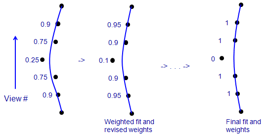

This section lists significant changes or additions to this guide from the 4.5 version.
This is a guide to building single and dual axis tomograms with IMOD using the eTomo interface. It contains sufficient detail to serve as a reference guide, which makes it less suitable when starting out. The recommended approach is to work through our tutorial with a sample data set before trying to use this guide to process your own data.
In this document, program names are capitalized. However, their true names are all lower case, and they must be run by entering these names in lower case.
eTomo works with a set of command files that contain all of the lines needed
for running one or more programs. These files have
the extension .com, and when a command file is run,
program output is
recorded in a log file with the extension .log. When you
open the panel for a particular step, eTomo
reads the existing contents of a command file to set the parameters
and settings that appear in the panel.
When you run an operation,
it writes the current parameters into the command file. eTomo also
makes sure that the command file matches your entries when you leave a
panel by pressing Done or Postpone or simply by selecting
another panel with a button on the left.
You can run a command file at the command line with "subm", which is either an alias or a script depending on your operating system. For example, if you enter "subm track", a file named track.com will be executed in the background, a log file will be created called track.log, and a message will appear when the command file is completed. For more information on the format of command files and how to run them, see Command Files in the Advanced Topics section. If you want to make or edit command files, or if you want to run programs at the command line, see also the section on Entries to Programs.
Sections or views in the image files are consistently numbered from 1 within the graphical interface programs, eTomo, 3dmod, and Midas. However, many other programs in the IMOD package number coordinates from 0, which was the original convention for MRC files. If you work exclusively within eTomo, you need not be concerned about this; but if you run other programs in the package you need to be aware of this problem. When a program refers to "view numbers", these are always numbered from 1; but when a program refers to "section numbers" or "Z values", there is a good chance that they are numbered from 0. The most important example is the program Newstack, which is often used for rearranging or extracting sections from a stack. It has an option "-fromone" that allows you to enter section values numbered from 1 instead of 0.
Nearly every program that you run will create a backup file if an output
file already exists, rather than simply deleting the old version of the output
file. The existing file is renamed by adding a "~" at the end.
This can lead to some large
unneeded files if commands are run more than once. It is helpful to have an
alias for purging backup files in your .cshrc if you are using tcsh or your
.bashrc if you are using bash:
alias purge '\rm *~' OR alias purge="\rm *~"
With this alias, "purge" will delete all backup files without asking for
confirmation.
All of the operations that you run through eTomo will produce new image files in the MRC format. The starting tilt series is not required to be an MRC file; programs can also read TIFF files and files in a few MRC-like formats, the most notable being DigitalMicrograph files and files in the PIF format used by Bsoft.
In order for the processing sequence to work, however, the names of your starting files must follow several conventions. The raw image stacks must have an extension of either ".st" or ".mrc"; so for a single axis tilt series the name should be dataSetName.st or dataSetName.mrc. For a dual axis data set, the two filenames must end in "a" and "b" before the extension, e.g., dataSetNamea.st and dataSetNameb.st. Etomo will rename files ending in ".mrc" to end in ".st" so that the rest of the processing can proceed with the expected names. These names are just conventions and do not correspond to a separate file format. In fact, if a file is not in the MRC format, it still needs to be renamed to have one of these two extensions to be processed in eTomo.
The data set name can contain ".", "-", and "_" as separators but must not contain spaces or other characters that could confuse a Unix shell or the IMOD processing tools. Specifically, the following characters are known to give problems:
` ' " ! # $ % & * ( ) { } [ ; < > / ? \ |
It appears that all of these characters can be used safely in filenames
(although colon is not allowed in Windows):
~ @ ^ _ - = + ] , . :
If you are supplying your own file of raw tilt angles, they must be named with the data set name followed by ".rawtlt" (or "a.rawtlt" and "b.rawtlt" for a dual axis tilt series.)
It is possible to have your small working files automatically saved to another directory every time that you run a command file. This will provide backup protection if you build tomograms in a disk area that is not regularly backed up. To use this feature, first be sure that the directory where you will do your work and the directory where files should be saved both exist. If you choose to copy your raw stacks to the working directory, which you might want to do if this gives significantly faster access, then you can proceed as described below. If you want to leave the raw stacks in the backed up location, then eTomo can create links to them for you, but this will work best if you start eTomo from the directory where you will build the tomogram.
After every command file is run, the script "savework" will be run automatically, copying files over to the source directory. You can also run "savework" yourself at any time (for example, after working on a fiducial model for a while).
X-rays and other artifacts from the CCD camera can produce extreme intensity values in the raw tilt series. These effects can result in the images looking terrible when loaded into 3dmod in the default way, with the data stored internally as bytes. When the image features of interest occupy a very small fraction of the whole dynamic range of the data, there are only a few gray levels left to represent them out of the 256 levels. Successful removal of these artifacts will solve this problem (see PRE-PROCESSING: REMOVING X-RAYS). Before the artifacts are removed, one can use the "-I 1" option when starting 3dmod to make it load the data as integers. It will then provide four rather than two sliders for contrast control, so that the small part of the dynamic range occupied by true image features can be displayed with good intensity resolution (many gray levels).
The tilt series will automatically be loaded as integers when opened with the View Raw Image Stack button on the eTomo Tomogram Setup page, or with the View X-Ray Model button in the PreProcessing page. Thereafter, if you still have contrast problems, you can open 3dmod with the Startup dialog by right clicking on the viewing button, and then selecting Load non-byte data as 16-bit integers. You can make 3dmod load data as integers by default by selecting the menu entry Edit-Options, opening the Behavior tab, and turning on Load non-byte data into program as 16-bit integers. You should do this only if you are confident that you will not run out of computer memory when processing tilt series.
There is another procedure available if you do not want to reopen 3dmod with the integer loading option, or do not have enough memory to do so. Use the Auto button or adjust the Black and White sliders until the image features are visible in an appropriate contrast range. Then use the menu entry Edit-Image-Reload to open a dialog for rescaling the data. Press Apply and the data will be reloaded with the scaling indicated in the Lower limit and Upper limit text boxes, and the Black and White sliders will be set to values that allow the contrast to be decreased as well as increased. Now that you can see the images better, you can repeat this process if necessary - adjust the contrast again, then press Calc then Apply.
Finally, if you can not get good dynamic range even after removing X-rays, you should prevent the coarse aligned stack from being converted to bytes. Go to Advanced mode in the Newstack section of the Coarse Alignment panel in eTomo and uncheck Convert to bytes.
The default parameters for reconstruction assume that the numbers in your images are linearly related to the number of transmitted electrons caught by the detector. This is the case if images are recorded directly by CCD camera or if film is digitized in optical density units. The logarithm of such values should then be proportional to projected mass density for imaging dominated by amplitude (aperture) contrast. Because of this, the backprojection program, Tilt, has an option to take the logarithm of the numbers after adding a base value (originally designed to specify the fog level of film but also useful if the data are offset from zero). The default is to take logarithms with a zero base value. If your images are already mass-normalized, you should turn off the taking of logarithms in the Tomogram Generation Panel; if your images are in arbitrarily scaled units, you may need to turn off the logarithms or at least adjust the offset value that is added so that all values will be positive before taking the logarithm. You may also want to turn off the logarithms for predominantly phase contrast (cryoEM) data. When the logarithm is turned off, a separate set of factors is used to scale the backprojection data for output, so you do not need to change the scaling yourself.
If your data were derived from unsigned 16-bit integers and have had 32768 subtracted from them for storage as signed integers in the MRC file, the programs will try to detect this and set the base to 32768.
If electron density appears as white in your images, Beadtrack will fail to track your fiducials properly with the default settings. Simply check Light fiducial markers in Advanced mode in the Fiducial Model Generation Panel. Also, check Light in the Bead Fixer when making the seed model or fixing gaps.
A tilt series taken by tilting in two directions from zero tilt or another angle often shows a discontinuity in the aligned stack at the transition between the two halves of the series. Usually this reflects either an irregular tilt increment due to backlash in the goniometer, or changes in the specimen during the first half of the series. Because of these effects, you should always identify such tilt series as bidirectional in the Setup Tomogram panel. Doing so will identify the first half of the series as a separate group in the Separate view groups fields on the Fiducial Model Generation and Fine Alignment panels. These entries will prevent the programs from assigning the same or similar values for alignment variables to views that are not in the same half of the tilt series. For example, if the discontinuity occurs between views 71 and 72, the Separate view groups fields will be filled with "1-71".
For plastic section tilt series, sometimes the shrinkage in the first half of the series makes it hard to track gold beads across the discontinuity. An option is available in the Fine Alignment panel to find a magnification (size) change at one or more views. When you identify the series as bidirectional during the setup, this option will appear in Basic mode, with the correct view number filled in, but it will not be turned on.
In some cases there appears to be a change in the X-axis tilt of the specimen between the two directions of tilting. It is possible to correct for this effect by solving for a single change in X-axis tilt in Tiltalign; see Correcting for X-axis Tilt in Bidirectional Tilt Series in the Extra Topics section.
A starting estimate for the angle of the tilt axis in the images is required for processing, and if this information is not contained in the header of your tilt series, you will have to supply an estimate yourself. For the initial coarse alignment with cross-correlation, this angle needs to be accurate to within about 5-10 degrees, depending on the highest tilt angle. The fine alignment with fiducials will solve for the actual angle and can work with more inaccurate estimates; it will also warn you if your starting angle is significantly off. For a given microscope, this angle is essentially fixed for each magnification and will usually be nearly constant over some ranges of magnifications. Thus, if you can a good fine alignment on one data set, you will have a very good value to use for comparable future data sets.
If you have no information about the nominal tilt axis angle in your tilt series, open the raw stack in 3dmod and step or riffle through some of the views until you can get an impression of structures rotating around an axis. You may have to go up to a tilt angle of ~20-30 degrees to see the axis of tilting clearly. The axis may be more apparent in the coarse aligned stack, so you may have to start the data set with a very rough estimate and refine that estimate with the coarse aligned stack. The rotation angle is the angle from the vertical to the axis of tilting, where counterclockwise is positive.
The problem with the approach just described is that it cannot resolve the ambiguity between the true angle and an angle 180 degrees away; and the latter angle will invert the handedness of the reconstruction. This is a difficult issue; see Reorienting the Volume for some ways to approach it. Properly configured tilt series acquisition software (e.g., SerialEM, FEI software) should provide a true angle that will give appropriate handedness.
When making both the initial coarsely aligned stack and the final aligned stack, you can reduce the size of the data by an integral factor. In both cases, there is an option the apply an antialiasing filter during image reduction. Aliasing occurs when information in the original image at spatial frequencies past the Nyquist frequency of the reduced image (i.e., the highest frequency that can be represented in that image) is mapped into lower frequencies. That mapping essentially produces noise in the reduced image. Simple binning does alias some information. An antialiasing filter removes the high frequencies before subsampling the image. Using this filter will increase signal-to-noise significantly ratio in the reduced image for an electron counting camera (e.g., the Gatan K2 camera in electron counting mode) because of the very high response of these cameras at high frequencies. Antialiasing may also be helpful for other direct electron detection cameras that have good high-frequency performance, but is unlikely to make a difference for data from fiber-optically coupled CCD cameras.
To work on a new data set, start eTomo and fill in the entries in the Setup Panel that appears. You need not start eTomo from the directory where the files are located.
Once you have made all of these entries, push the button to Create Com Scripts. eTomo will run the Copytomocoms script to produce command files for processing the data. For a data set consisting of single frames, the files are as follows:
Each ".com" file generates a corresponding ".log" file when it is run. In eTomo, you can examine a log file by clicking the right mouse button over free space within a panel; the menu that pops up will show the relevant log files for that panel.
If you have a two-axis tilt series, you will get one copy for each series, with names "...a.com" and "...b.com". For convenience, most command files will be referred to below by a name without an "a" or "b" (e.g., track.com), but in practice you will always be running an "a" or "b" version when you have a dual tilt series.
The man pages for the programs run by these command files give full details on their operation and on the meaning of the entries to each. Consult them for any questions on the options available in these programs.
If you find that you need to run Copytomocoms by hand, see Getting Command Files in the Advanced Topics section for more details.
For a montaged data set, some command files and programs are different, as follows:
As mentioned above, X-rays and other flaws in CCD camera images can produce extreme low or high values that ruin the contrast when you view the images in 3dmod, and they can also give undesirable artifacts in the reconstruction. These defects can be wiped out with Ccderaser, which finds X-rays in two ways. It looks for "peaks", or pixels whose intensity deviate from the surrounding pixels by a certain number of standard deviations, which is specified in the Peak criterion text box. It also looks for pixel-to-pixel differences that exceed background by a certain number of SDs, specified in the Difference criterion text box. The ones found by these two criteria have to be smaller than the size set in the Maximum radius text box. However, particularly strong artifacts larger than this size will also be removed if they satisfy other criteria, the principal one being a criterion for pixel-to-pixel differences shown in Extra-large difference criterion
When Ccderaser runs, it produces an IMOD model marking the pixels that were found. Press the View X-ray Model button to see this model. Points are sorted into different objects based on how much they exceeded a criterion (less than 1 SD for object 1, 1-2 SDs for object 2, etc.). You will probably be surprised at how many points are marked, possibly on the order of 100 points per image for a 2K by 2K camera. In our experience, the default criteria are conservative for unbinned images and all of these points are indeed X-rays. However, in binned images, the difference criterion may pick up some pixels on the edge of gold particles used as fiducials. If you see this happen, you can prevent it by raising the difference criterion to 10 or more.
If you want see the effects of changing criteria, you can save time by running in trial mode, using the Find X-rays button. The program will analyze images and produce a model without writing an output image stack.
When you press the Create Fixed Stack button, Ccderaser writes the corrected images into a file named "setname_fixed.st". If you are satisfied with the result, press the Use Fixed Stack button to rename the original file to "setname_orig.st" and replace it with the fixed stack.
If you find that some X-rays or other artifacts are too large to be removed with the default parameters, there are two avenues to pursue. If the artifacts are particularly strong, you can try reducing the Extra-large difference criterion, but make sure that this does not cause gold particles to be erased. Otherwise, increase the Maximum radius to encompass these large X-rays and try again. If the larger radius causes inappropriate points to be corrected, then do the removal in two stages. First create a fixed stack with the smaller radius, and press Use Fixed Stack. Then increase both the radius and the criterion so that only the large X-rays are removed, and rerun the removal. Press Use Fixed Stack again if you are satisfied with the result.
You can see the minimum and maximum values and their locations for each view by pressing Show Min/Max for Raw Stack or Show Min/Max for Fixed Stack. You will see the statistics output from the clip program both in a graph showing minimum and maximum values, and in a log window. In the latter, views with locally extreme values of the minimum or maximum will be marked by stars and listed at the bottom. This marking of outliers is of limited value with the raw stack because all views generally have X-rays that increase the maximum; but with the fixed stack this listing will often reveal the subset of views that still have sizable uncorrected X-rays. If you have trouble finding a position, you can type the X and Y coordinates into the spin boxes in the 3dmod Info Window then toggle the centering button in the Zap window toolbar on then off to center on the position that you typed in.
If your images have other features that do not get corrected by the automatic X-ray removal, you can specify the pixels to erase in a model file. Press the A button next to Manual Pixel Region Replacement to reveal the controls for this option, and see the man page for Ccderaser for details on how to construct the model file. By default, model objects are assumed to have contours consisting of a single point on each pixel to be erased. If you want to erase pixels along lines, list objects with such line contours in the Line replacement list text box. If you want to draw contours as boundaries around large patches to be replaced, list objects with such contours in the Boundary replacement list text box.
With a montaged data set, when you view the X-ray model or the fixed stack, the images will be loaded into 3dmod with no overlap and spaced apart by a few pixels, so that all parts of every frame can be viewed. The statistics outputs will list the minimum and maximum for each piece in the stack, but their locations will be translated into coordinates on the relevant view so that you can find them in the display. A manual replacement model is also drawn on a montaged display with no overlap; Ccderaser will translate the coordinates from this display into coordinates in the appropriate frame in the file. A feature to be replaced on all sections needs to be modeled on only one piece in the montage (any piece).
The main purpose of this step is to get the images aligned well enough for the automatic tracking of fiducials to work. For the purposes of this basic alignment, there are only a few options to be aware of. First, if you identified the tilt series as bidirectional during tomogram setup, the option to find a magnification change at the discontinuity in the series will appear in Basic mode, and you can turn this on to adjust for shrinkage in the first half of the series. Second, it is possible for the alignment to fail if there is inadequate gain normalization of the images, because a fixed pattern present in the images may make them correlate best at zero shift. To handle this, switch to Advanced mode in the Tiltxcorr section and turn on Exclude central peak due to fixed pattern noise. (This option used to be problematic but was enhanced to be useful in IMOD 4.7.) Other than this, there are generally no parameters to adjust, so you proceed by pushing the top three buttons in sequence.
Press Fix Alignment with Midas only if you need to adjust some of the alignments. This will start Midas on the raw image stack, with the alignment transformations determined on the first step. Go to the pairs of views that showed problems, and use the left mouse button to translate each pair of images into alignment. When you toggle between a pair of images, you should see the section appear to tilt around an axis in the middle. The tilt axis should appear to be vertical because Midas applies a global rotation to the images, starting with the value in the Tilt axis rotation text box on the Coarse Alignment panel. If you have a big magnification change, you could also correct for this using the right mouse button while holding the Shift key down. (Alternatively, you can rerun the correlations after turning on the option to find a magnification change at this view, switch to Advanced mode if necessary to see this option.)
After fixing and saving transformations, you must generate a new coarse aligned stack.
The coarse aligned stack will be used for tracking the fiducial model, and there might be cases where you want to work with binned images for this procedure. You can set a binning for this stack by pressing the Advanced button then adjusting the entry for Coarse aligned image stack binning before generating the stack. also note the option to Reduce size with antialiasing filter; see Image Reduction with Antialiasing for an explanation of when this is helpful. If you change your mind about binning after starting to work on a fiducial model, you can go back to this panel, change the binning, and generate a new prealigned stack. The existing model will load correctly onto the stack with the new binning; just be sure to save the model after doing this and eventually run the fine alignment, which will synchronize all information about the pixel size.
It is possible to generate a tomogram using only the coarse alignment from cross-correlation. This could be used to get a tomogram quickly to see whether it is worth doing the fiducial alignment, or if the tilt series was just for scanning purposes, or if there are no fiducials. This section describes a simple procedure for getting a tomogram quickly; for more detail on how to get as good a tomogram as possible from this procedure, see Making a Tomogram with Correlation Alignment in the Extra Topics section.
If you need to set the position of a tomogram built with fiducialless alignment, see the Advanced Topics section. It is recommended that you NOT do this if you plan to go back and do the fiducial alignment procedure.
For a montaged data set, the Coarse Alignment panel also provides controls for fixing errors in the displacements between frames. Blendmont analyzes the overlap regions between adjacent pieces and determines how to shift the pieces into registration. Sometimes this analysis fails and a few of the shifts are wrong. It is important to fix these errors before going on to build the fiducial model, because when the displacements are changed, image positions in the blended image change as well. There are two ways to tell if there are shifts that need fixing.
To fix displacements, press Fix Edges With Midas. If you are correcting for magnification gradients or image distortion fields, you will first have to press Make Distortion Corrected Stack. This step is necessary because you need to visualize overlaps in the same images that Blendmont is analyzing, namely distortion-corrected images.
When Midas starts, enter the view number of a section with a large error in the Current Section text box. The control panel has push-buttons for the four edges with the worst errors; use these to select the edge with the worst error. Toggle between the two pieces to visualize the registration in the overlap zone. If it looks bad, shift the Current piece into alignment (the Apply Leave-out Error button can be a useful shortcut if this is the only piece with an error -- see the Midas man page for explanation.) If the overlap looks fine, simply go on to another edge; you will probably find the error there. This potentially confusing situation may be quite frequent, because whenever a bad edge involves a corner piece of the montage, its error is spread equally between the two edges of that piece. It will thus look like there are two equally bad edges when only one is bad.
After you correct the displacement at an edge, the push-buttons will rearrange and show new maximum errors. Once the maximum error is down to 0.3, you can go on to another section. When you are done, save the edge correlation displacement file and exit. Your corrected displacements will automatically be used when Blendmont is run again, and Blendmont will build new edge functions on its next run, because the edge functions depend partly on the displacements that you just modified.
There are several ways to get a model that can be used to align the tilt series. The first involves starting with a collection of gold beads on the zero-degree view, referred to as a seed model, and using Beadtrack to find their locations in the rest of the tilt series. The seed points can be marked manually or selected automatically. The second method involves tracking small patches of the image through the series by cross-correlating each patch from one view to the next with Tiltxcorr. The third method involves using RAPTOR to find beads automatically.
A seed model can be generated automatically by Autofidseed, which aims to select a well-distributed set of fiducials of a desired number. If this procedure does not succeed in giving a good seed model, for small data sets you would probably just proceed to make or finish the seed model manually. When larger numbers of fiducials are needed, however, it is worth trying to get Autofidseed to make a usable seed model by accessing the various problem-solving features provided in the interface. Here is what you need to know about automatic seed-finding to use it effectively in more difficult cases:
The basic use of Autofidseed involves a small number of parameter choices:
Press Generate Seed Model to run the operation. If you have the project log open, you will see the two most informative lines from the Autofidseed log file, a line showing the number of beads available and how many were considered clustered or elongated, and a line showing the total number of beads chosen and their distribution on two surfaces, if any.
Press View Seed Model to see the result. If you chose to have beads found on two surfaces, the ones on the bottom will appear as green, and the ones on the top as magenta, although they are all in one model object.
You need to switch to Advanced mode to see the controls for problem-solving, but two buttons present in Basic mode can help you assess the problems first. Open Initial Bead Model will show you whether Imodfindbeads succeeded in finding gold beads and distinguishing them from other features. If not, you need to adjust some parameters for running that first step. If you chose to find beads on two surfaces, Open Sorted 3D Models is available for opening the models of 3D positions derived from all of the Beadtrack runs in 3dmodv. This display will reveal whether the sorting into two surfaces failed for one or more runs, or whether there are too few beads on one surface. Use the 9 and 0 hot keys to step between the models.
A variety of problems can be addressed by the Advanced controls:
The first step is to set up a seed model. Press Seed Fiducial Model Using 3dmod to open the prealigned stack and an empty model in 3dmod. The Bead Fixer module will also open in a mode that has features to help with the seeding process. These features are:
Pick a view near zero tilt that has good images of the beads. Put one point in the center of each desired bead. Beads too close to the edges are not trackable by Beadtrack but could be tracked by hand if necessary. Try to have at least 8 beads well distributed over the area, and well distributed between the two sides if they are on two surfaces. The more beads you have, the better the alignment will be, up to a point, but the more work it may take for you to complete the model. If the beads are all on one surface, there is not much point in having more than 12 or so; if they are on both surfaces, 20 or more may be useful. However, for areas larger than 1000x1000 pixels, you will probably need to use local alignments, in which case you should have at least 8-12 fiducials per 1000 by 1000 pixel area. (See Using Local Alignments.) Save the seed model when you are done.
Beadtrack proceeds from one view to the next, tracking as many beads as possible on the new view. Once it has bead positions on enough views, it runs a simplified tilt alignment to get improved predictions of where beads should be and to reject erroneous positions. This procedure usually works well on small data sets, but may perform poorly when the data included in the tilt alignment do not give a good fit. The data can fit poorly when they are from a large area or when the tilt series includes very high angles. To address this problem, Beadtrack provides two ways to restrict the data so it fits the alignment better: 1) the tracking can be done over a series of overlapping subareas, so that the fit to the data is similar to that available when using local alignments; and 2) the number of views included in the tilt alignment can be restricted, so that high angle data from both ends of the tilt series are not included in the same fits. For particularly difficult data, both methods can be used.
Most standard entries to Beadtrack should work well, so in Basic mode eTomo shows only a few of the many parameters.
Press Track Seed Model. Open the track.log file and skip to the end to see a summary of which beads could not be tracked completely. If several beads fail to track past a particular view, you might want to add that view to the list of views to be skipped and rerun the tracking.
Next press Fix Fiducial Model to read the new fiducial model into 3dmod. The Bead Fixer dialog box will appear in the gap-filling mode. It will allow you to jump from one gap in the data to the next and fill in missing points if appropriate. It is acceptable for some of the points to be missing on some of the views. If too few of the points can be extended all the way to the first or last views, you can add some fiducials that are present only in higher tilt views. Just be sure to add them on a substantial number of views, not just on a few, so that their 3-D positions can be solved for accurately. If you do need to add several fiducials, you could put some "seeds" into your edited fiducial model and allow Beadtrack to track those beads as far as possible.
Sometimes you will want to have Beadtrack start with an existing fiducial model instead of a seed model. This is especially helpful when there are a large number of beads that failed to track. For example, you might extend some fiducials past a view where they failed to track then try to get Beadtrack to track them the rest of the way, or you might want to add fiducials when you realize that you need to use local alignments. To use the existing fiducial model as a seed for another run, press Track with Fiducial Model as Seed. Your original seed model will be renamed to setname_orig.seed the first time that you do this. Then press Fix Fiducial Model to read the retracked model into 3dmod. You can repeat this operation as many times as needed. This procedure will tend to fill in gaps in the model, which is usually appropriate. However, if you have already left some gaps in the model because of ambiguities, you should uncheck Fill seed model gaps.
If you are doing a double-tilt series, at least some (8-10) of the beads that you track must be the same in the two series. The shell script Transferfid will help ensure this by making a seed model for the second axis based on the fiducial model for the first axis. To use this tool, complete your fiducial model for the first axis. Proceed through the coarse alignment steps for the second axis until you reach the Fiducial Model Generation panel. If your tilt angles are not in ".rawtlt" files, you also must fill in the view numbers of the zero-tilt views in the Center view text boxes (visible in Advanced mode). Press Transfer Fiducials from Other Axis to begin the operation. Transferfid will search for the pair of views in the two series that correspond the best, then transfer the fiducials from the first series to make the seed model for the second series. At the end, the program indicates the number of fiducials that failed to transfer and how the contour numbers correspond between the first fiducial model and the new seed model. This information is saved in a transferfid.log file. Transferfid also creates a file called "transferfid.coord" with the information needed for the first stage of the tomogram combining procedure to determine how fiducials correspond between the two tilt series. As long as this information is available, you can add and delete fiducials from either tilt series after doing the transfer, and the combining procedure will still be able to tell which fiducials correspond.
When there is a substantial shift between the areas captured in the two axes, the transferred fiducials will not cover the area for the second axis. If you used automatic seed selection successfully on the first axis, you can use it again to add fiducials in the remaining area. Simply switch to Generate seed model automatically, set appropriate parameters, and press Generate Seed Model to add points to the model.
If Transferfid fails to work on the first attempt (as indicated by an unusually large number of fiducials that failed to transfer or a seed model that contains incorrect model points), you may need to set the translational and rotational alignment between the two series manually with Midas. To do this, just check Run midas and run the transfer again. Midas will start up with the center views from the two tilt series. Adjust the alignment with translation and rotation (left and middle mouse buttons). Do not be alarmed if you have to rotate the image by 180 degrees, just select Interpolate to get a good rotated image. You will find that the images cannot be aligned if the sample was turned upside-down between the two tilt series; if so, select "Mirror around X-axis" from the Edit menu and then align the images. Save the transformation and exit. The search for the best corresponding pair of views will proceed using this starting alignment.
The Advanced mode allows you to indicate that mirroring is needed, so if you know that the sample was inverted, you can select just this option and run the operation without having to run Midas. In Advanced, you can also specify the views to search around and limit or expand the number of views in the search. As a last resort, you could set the Number of views in the search to 1 and set the alignment as well as possible in Midas, including a magnification change and stretch.
If the transfer operation still fails, you can run 3dmod on both stacks at once and add some initial points to the second seed model in the same order that they occur in the first fiducial model. It is helpful to open one of the images in the Slicer window and rotate it by 90 degrees with the Z slider. You only need to make the first 5 beads correspond, or however many are needed to sample beads on both surfaces, if beads are on two surfaces. After that, you can add the rest in any order. If you do this, then when you prepare to combine the two tomograms, you would specify that only the first 5 beads correspond.
When there are insufficient fiducials, local patch tracking can provide a significantly better alignment than the basic correlation alignment. It allows an alignment that includes a solution for the tilt axis angle and that can correct for shrinkage or magnification changes. Even if there are fiducials, the patch tracking may provide a tomogram of adequate quality in some cases, so it may be worth trying as a way to reduce labor.
One feature that requires some extended explanation is the option to break contours into overlapping pieces. Normally the positions from tracking each patch are placed into a single contour, just as for real fiducials. The mean residual from a fine alignment with such contours will be directly comparable to the mean residual from a regular fiducial alignment. A high value generally indicates that some or all of the patch positions do not track a single 3D position in the specimen, which means the alignment is not globally consistent. This happens because tracking a small patch by correlation is susceptible to the same kind of progressive shifts in 3D position as occur with an overall fiducialless alignment by correlation. The option to break contours into pieces provides a way to compensate partially for this problem. The positions for each patch will be subdivided into a series of overlapping contours, where the length of each contour is as specified, and the contours overlap (contain identical points) over a certain number of views, 4 by default. Breaking contours into pieces will have the following effects:
Patch tracking is controlled by the following settings:
See Aligning with a Patch Tracking Model for details on what to do differently in the alignment step. Also note that for a dual-axis data set, you must create models of corresponding points for the initial alignment between the two tomograms, since there are no corresponding fiducials.
The RAPTOR program from Stanford is now part of IMOD and the option to use this program is available, but only for the first axis of a dual-axis data set. See the RAPTOR man page for details on its operation. First decide whether to run it on the raw stack or the prealigned stack. The latter case allows tighter tolerances for some distance parameters and is usually more successful. Decide on the number of beads to find per view and enter that in the Number of beads to choose text field. The Unbinned bead diameter field should have a correct value based on the pixel size and actual bead size that you entered in Setup.
Press Run RAPTOR to run the program, which will create a model file "setname_raptor.fid". It can take on the order of an hour with many beads. When it is done, press Open RAPTOR Model in 3dmod to see the resulting model on the appropriate stack. If the result is acceptable, then press Use RAPTOR result as Fiducial Model to rename the model to the standard name for a fiducial model. At this point, you can press Fix Fiducial Model to open the model in 3dmod with the Bead Fixer in gap filling mode, and you can also use Track with Fiducial Model as Seed to track additional points in the model in the conventional way with Beadtrack.
The goal of the final alignment is to transform the images so that they represent projections of a solid body tilted around the Y axis, as well as to refine the projection angles. In order to transform the images, one needs to determine the rotation, translation, and scaling (magnification) to be applied to each image. It is also possible to solve for variables which will correct for linear distortions of the specimen.
Whether you have fiducials on one surface or two determines what variables can be solved for. If there are beads on only one surface, you can solve for either tilt angles or stretch in the X direction but not both. If there are beads distributed through the depth of the sample (typically but not necessarily on two surfaces), you can solve both for tilt angles and for distortion, or for tilt angles and compression, but not for all three kinds of variables.
Before computing an alignment for the first time, check the following settings in the General parameter page:
Press Compute Alignment and examine the results in the log file after the process is done. The lengthy log file has been split into useful sections under different tabs. The first page that you see, Errors, shows two useful summary values. One is the ratio of measured values to unknowns, which provides an indication of how robust the solution is against random errors and of whether there might be too many independent variables being solved for. The other is the residual error mean, a global measure of the quality of the fit. A residual error is the distance in pixels between the measured position of a fiducial on a view and the position predicted by the alignment solution. You can view a model of the residuals at every point, exaggerated by a factor of 10, by pressing the View Residual Vectors button (see Residual Model Output). This feature is particularly useful for assessing whether you need to use local alignments.
The Solution page shows the value of some of the alignment variables for each view. Examine the tilt angles, looking for places where they change by unusual amounts. The column labeled "deltilt" shows the difference between the solved tilt angle and the original, nominal tilt angle. This column should change gradually when tilt angles are grouped. Tilt angles are grouped by default because low tilt angles cannot be solved for accurately without grouping (see below). The "mag" column shows the effect of overall shrinkage and slight magnification changes due to changes in focus. If the "mag" column shows a sudden change that is much larger than surrounding changes, consider making all of the views after this change be a separate view group, as described above. For the variables that are grouped, this will keep views on the two sides of the transition from being constrained to having the same or similar values.
The last column on the Solution page, "mean resid", shows the mean error (residual) in pixels for all of the points on each particular view. This information will reveal whether some views give a poorer fit than others.
Plots of the various columns in the solution versus view number can be seen by right-clicking over the Alignment panel and selecting one of the "Plot" options from the popup menu.
The Surface Angles page shows the results of an analysis of the solved bead positions in 3D and recommends a change in tilt angles that would make the beads lie in a horizontal plane. Make the recommended change at least after the first run of Tiltalign by taking the value shown for "Total tilt angle change" on the last line and using it in the Total tilt angle offset text box. It is not necessary to do this repeatedly because the final tilt angle offset will be determined in a later processing step.
You can open the Large Residual page to see the list of fiducials with the largest errors, but it is easier to deal with this information from the Bead Fixer dialog in 3dmod, which is opened in big residual mode when you press View/Edit Fiducial Model. The Bead Fixer is told what log file to read, so you can proceed without pressing Open Tiltalign Log File. Examine the points in turn by pressing the Go to Next Big Residual button (or the apostrophe hot key), paying particular attention to ones with errors greater than 2 pixels. Adjust point positions in the model, if appropriate. When you want to recompute the alignment after fixing some points, you can press Save & Run Tiltalign, which will save the model, rerun Tiltalign, and read in the new log file. There is one trap to this convenience button: Bead Fixer has no way of knowing if you have changed parameters in eTomo, so when you do change alignment parameters, you must compute the alignment through the button in eTomo instead. The Bead Fixer will be told to reread the log file after the alignment is done.
In Bead Fixer there is a button to Move Point by Residual. This button will move a point to the position that fits the mathematical model from the alignment. The image data are not consulted with regard to this movement, and sometimes the movement is inappropriate. This button is there for convenience, but you should not use it if it moves a point away from the center of the gold bead. This will often be the case if you are going to need local alignments. An even more convenient and powerful button is Move All by Residual. As explained in Using Robust Fitting, it is preferable to use robust fitting to reduce the effects of erroneous points than to move point blindly by their residuals. If you do use this feature, you should not do so until you have gone through enough points one by one to be confident that it will not move points away from the beads. In addition, you should select Neighboring views in the Residual Reporting box so that the criterion for whether to consider a residual large will be based on the residuals of other points on nearby views. This will keep the points on the high tilt views from always being selected as having the highest residuals. Otherwise, you may end up misaligning the high tilt views in the data set by using this button.
In the align log, you can also open the Fiducial Coordinates page to see the 3D coordinates that have been solved for the fiducials, as well as the mean residual in the fit for each fiducial. It is easier to visualize these points in 3dmodv by pressing the View 3D Model button on the Fine Alignment panel. If you indicated that points are on two surfaces, then the points will be sorted into two objects based on which surface Tiltalign thought they were on. This is a good way to assess whether the points are well enough distributed on both surfaces to support solving for distortion, particularly when local alignments are to be used.
Before you get into trying to solve for linear distortion and grouping variables, you should be aware of several points. First, variables are grouped in order to reduce the number of variables being solved for. Instead of solving for a different tilt angle for each view, with grouping by 5 the program will solve for a tilt angle for every fifth view and determine the angle for the rest of the views from the ones that it is solving for. This reduces the number of tilt variables being solved for by a factor of 5, and also averages over a larger number of measurements when solving for each individual value. Because of this averaging out of random errors, grouping will actually give a more reliable solution for variables that are hard to solve for, such as tilt angle near zero degrees. It is for this reason that you should always use grouping of tilt angles even when you are not solving for distortion. The reduction in number of variables by grouping becomes particularly important when you have a large number of fiducials (e.g., more than 150) or a large number of views (e.g., more than 140). In these cases, the program may have trouble finding a solution unless you also group some variables that are not grouped by default, namely rotation angle and magnification.
The grouping of variables can be done in two different ways. In one way, the particular parameter will change linearly from the first view in one group to the first view in the next group, and will appear to change smoothly over the whole tilt series. This is referred to as linear grouping or linear mapping. This method is used for every variable except stretch along the X-axis. For that variable, all of the views in a group will have exactly the same value.
The next point concerns the nature of the distortion solution, a strange beast. Even if the only thing happening to the section is a stretch along the X-axis, solving for distortion will successfully account for these changes, but the resulting solution will not numerically reproduce the amount of stretch. The problem is that there is an infinity of equivalent solutions, which all account for the distortion equally well, but differ in the geometry of the resulting reconstruction. This geometric difference is a "strain", a shifting in Z proportional to the X value of a column of pixels. Without additional information about the section, there is no way to recover its true structure, and the actual amount of stretching that occurred. The program needs to pick one solution out of the equivalent ones, and it does so by eliminating one variable; thus you will notice a variable listed as "dummy" in the Mappings page of the log file. Typically, this arbitrarily selected solution will change the most at high tilt angles, sometimes dramatically so, even though the actual changes in the section happen at a nearly constant rate through the series.
The distortion solution will also account for thinning when tilt angle is allowed to vary as well. The equations governing this situation dictate that the X-axis stretch change rapidly at the highest tilts, even if thinning occurs at a regular rate through the series. Thus, regardless of whether there is section distortion or thinning, or both, it is almost inevitable that the X-axis stretch will change most rapidly at high tilt.
The last point to be aware of is that some group sizes will vary with tilt angle. Group size for tilt angle will be proportional to the cosine of the angle, and will be set so that the average size equals the value that you specify for grouping. Because of the peculiar behavior of the X-axis stretch, its group size will change even more with tilt angle.
Finally, be aware that including distortion can lead the program into inappropriate solutions, in which the tilt angle and the X-axis stretch covary excessively. This can occur when there are too few fiducials, too great an imbalance between the number of fiducials on the two surfaces, substantial random errors in the locations of the model points, or a ratio of measurements to unknowns that is too low. The potential remedies are to increase group sizes or to give up on solving for distortion.
To solve for distortion, open the Global Variables page of the Fine Alignment panel and select Full solution in the Distortion Solution Type section. This will automatically switch to some good default values if you have fiducials on both surfaces, namely a grouping of 5 for tilt angles (if they are not already grouped), 7 for the stretch variable, and 11 for the skew variable. Grouping is important when solving for distortion because it dramatically reduces the number of variables to be solved for, averages out random errors better, and gives a more robust solution. The typical range for group sizes would be:
You would want to pick the low end of these ranges of group sizes if an alignment run reveals that one of the distortion variables changes especially quickly (but don't be fooled by big changes for pictures taken out of sequence). Conversely, if the ratio of measurements to unknowns is lower than 4-5, you would want to make the default group sizes large. In this case, you could also switch to grouping rotation and magnification variables as well, provided that the solutions for these variables already looks fairly smooth.
The stretch variable ("dmag" in the Solution page of the log file) will typically range from 0.001 to 0.02 but can easily reach 0.05 at high tilts. If you get values larger than 0.05, or if you get changes in tilt angle ("deltilt") more than 2 degrees, you should increase the group size and see if the range of values decreases, particularly if you have only 3-5 fiducials on the surface with fewer fiducials. If the range decreases substantially, stick with the larger group size. You can also increase the grouping for skew and tilt angles to try to get a better-behaved solution. If a solution seems unreasonable, either abandon the attempt to solve for distortion, or solve for skew angle only, as described in a few paragraphs.
The skew is an angle in degrees and will typically range from 0 to 1 degrees. Values greater than about 0.2 degrees are worth correcting for, and a change of more than about 0.3 degrees from one group to the next would be a big change.
If you have discovered that there is some sudden change in alignment such that two views should not be grouped together, then the simplest thing to do is to specify a Separate view group on the General parameters page. For example, if there is sudden change between views 30 and 31, enter 1-30 in this text box; more than one separate group can be entered if they are separated by spaces.
A finer degree of control over grouping of an individual variable can be achieved by making an entry in the Non-default groupings text box that appears in Advanced mode for each variable. To use a non-default grouping, enter the starting and ending view number and the group size, separated by commas. For example, if the default grouping for X-stretch is 10, but you want smaller groups for the first and last 20 views of a 121-view tilt series, then enter "1,20,5 102,121,5". Separate different non-default groupings with spaces, as in the example.
A good alignment has a mean residual error of 0.25 to 0.5 pixels, or more for larger gold particles or images acquired at smaller pixel sizes (less than 1-1.5 nm).
If you have fiducials on only one surface, or only a few fiducials on one surface, you can't properly solve for both tilt angle and distortion. If the section has thinned but not distorted, then allowing the tilt angles to vary will correct for the thinning. If the section has distorted but not thinned, then solving for distortion with fixed tilt angles is appropriate. In reality, both phenomena occur, and section sag can also make the tilt angles inaccurate, so that fixing them completely is likely to be problematic. The simplest and safest thing to do in this situation is not to solve for distortion, but here is a procedure if you want to explore including the distortion solution.
Robust fitting is an iterative method in which data
points with larger fitting errors are given less weight when finding a
solution. If there are sufficient data points (in our case, fiducial
positions), it can keep the solution from being contaminated by a small number
of aberrant points. The procedure is illustrated here:

This is a side view of a few of the positions of one fiducial, where the
vertical axis is view number, the points show the X-coordinates of points in
the fiducial model, and the blue line is the X position predicted from the
solution fit to these data. In an ordinary fit (on the left), one bad point
tends to pull the fit away from the true positions of neighboring points.
When each point is given a weight that depends on its error (numbers to left),
the bad point gets the lowest weight. In a solution that minimizes a sum of
weighted errors (middle), the lower influence of the bad point reduces the
amount that it pulls the
solution away from true for the adjacent points. Their error decreases, the
bad point's error increases, and the weights change accordingly for the next
round. In an ideal case, iterating this procedure would reduce the weight of
the bad point to 0 (right). Realistically, clearly aberrant points might end
up with small non-zero weights, but still have very little effect on the
solution.
Select Do robust fitting with tuning factor on the General parameters page to activate robust fitting. The log file window will have a new Robust tab, showing the final mean weighted errors for global and local solutions, if any. The weighted errors will be less than with no robust fitting, but the unweighted error can actually be more because some down-weighted points will end up with larger errors. The tab will also show some details about the fitting, including a summary of how many points have final weights less than various thresholds. Typically, about 5% of points will have weights of 0.5 or less. You can enter a tuning factor less than 1 in the text box to downweight more points, or greater than 1 to downweight fewer points.
The assignment of weights is done by statistical methods that are valid only with a certain minimum number of data points, so the robust fitting may fail if there are too few fiducials.
The great benefit of robust fitting is that it can suppress the effects of aberrant points and give essentially the same alignment solution that would be obtained if those points were shifted to the correct positions. Its properties make it a better way to get an improved alignment than the questionable practice of blindly moving all points by their residuals in the Bead Fixer. Note in the figure above that moving the bad point by its residual in the original solution will not move it all the way to the correct location, and it can still contaminate the solution. After robust fitting, moving the point by its residual would in move it to the correct location (in the ideal case on the right). However, doing so will have no effect on the solution, which already predicts the correct location. In the Bead Fixer, you have the option of skipping points that have already been given low weights in the solution. See the Bead Fixer help for more details.
In some cases, distortions may occur because of stretching along an axis during the projection of the images, instead of from changes in the specimen. To accommodate this situation, Tiltalign can solve for a skew between the axes that occurs in all images. This is much easier than solving for a specimen distortion that changes through the tilt series, and does not require fiducials distributed in Z. In Advanced mode, check Solve for single stretch during projection on the Global Variables page. If you have fiducials on only one surface or only a few fiducials, disable the distortion solution since it could be redundant to the projection stretch solution.
The ordinary alignment assumes that the tilt axis is perpendicular to the beam axis. A non-perpendicularity between these axes is referred to as beam tilt. If beam tilt is more than a few tenths of a degree, it can impair the alignment. However, including linear distortion in an alignment solution has been found to adequately correct for the effects of beam tilt on the alignment and the reconstruction. Thus, if you are able to solve for distortion, beam tilt is not a concern. Even when distortion is not included, solving for beam tilt will probably not make a significant difference as long as you have enough data to solve for rotation for every view, unless the beam tilt is large. If you have very few fiducials and cannot solve for more than a single rotation angle, then including beam tilt becomes more important.
To include beam tilt in the solution, open the Beam Tilt box on the Global Variables page by pushing the A button. Select Solve for beam tilt. If the option is grayed out, you need to either solve for only one rotation angle or disable the distortion solution. When you run the alignment, the beam tilt is found by a secondary search, in which the standard minimization procedure is run with a series of fixed beam tilt values in order to find the beam tilt that gives the minimum error. After running the alignment, open the log. The value for beam tilt will appear at the top of both the Errors tab and the Solution tab. In addition, there is a Beam Tilt tab which shows the progress of the search by listing the normalized error measure (F value) for each value of beam tilt. This listing will show you how much the error is reduced by adding the beam tilt variable.
There are indications that the beam tilt angle is characteristic of a particular microscope. An alternate strategy, when there are very few fiducials, is thus to insert the characteristic beam tilt angle instead of trying to solve for it. You would need to have obtained the beam tilt angle from alignment of other data sets from that microscope.
If you are reconstructing a large area, particularly if you are montaging, then you may need to solve for local tilt alignments to get the same quality of alignment and resulting resolution as you would with a smaller area. Tiltalign first finds a global solution with all of the fiducials, then it adjusts the solution to fit the fiducials in each of a series of overlapping subareas, referred to as local patches. A target size for the patches is specified as an entry to the program, and the number of patches in each dimension is determined from this size and from the amount of overlap required between adjacent patches (50%, by default). However, patches are also required to contain a minimum number of fiducials, and each patch will be automatically expanded from the default size until it contains that number. In fact, there are two minimum requirements: one for the total number in an area, and one for the number on each fiducial surface. The latter requirement is needed to ensure that there is enough information to obtain a valid local solution for distortion. The typical result has been that a global mean residual of 0.75-1 is reduced to about 0.5 in the local alignments.
To use local alignments, you should have at least 8-12 fiducials per 1000 by 1000 pixel area. Proceed as follows:
If you have a model from patch tracking, some different procedures are in order. First, be sure that the model looks reasonable and does not have wild points before trying to run an alignment. Second, there are no reliable differences in height among the 3D positions tracked in the model, so you should be sure to select Do not sort fiducials into 2 surfaces for analysis if eTomo has not already done so automatically. More important, you should not solve for distortion. However, local alignments can be used successfully when there are many patches. When there are few patches, the number of variables should be constrained appropriately; for example, by fixing the tilt angles and solving for one rotation angle together with a beam tilt angle. If contours have been cut into overlapping pieces, it is possible for the solution to be unstable when solving for tilt angles. Look at the solution to make sure that tilt angles and rotation angles are behaving reasonably; if there is any doubt about this, just fix the tilt angles.
Robust fitting to the patch positions can be done as usual, by assigning a separate weight to each point, but it is also possible to assign a weight to a contour as a whole (i.e., give each point in the contour the same weight) by checking Find weights for contours, not points. When contours are cut into pieces, the program will make sure not to downweight too many contours in any one range of tilt angles. For large areas with many patches, the program will group the contours in rings so that errors are compared among contours at similar distances from the center of the field.
When you press View/Edit Fiducial Model for a patch tracking model, the Bead Fixer will open in the Look at contours mode. In this mode, it uses information about the mean residual for each contour. It will print the mean and maximum of these mean residuals in the 3dmod information windows when it loads the alignment log file. You can press Go to Next Contour to step to the contour with the highest mean residual, the next highest, etc. If robust fitting is not being used, it can be helpful to delete all contours with residuals above a certain level (for example, 0.8-1.0 if the overall mean residual is around 0.2-0.3). However, before deleting a contour, look at the Zap window at low enough zoom so that you see whether you have already deleted most of the patches in that range of tilt angles. Do not leave too few patches to allow a valid solution in that part of the tilt series.
There is no feature corresponding to a patch, so it makes no sense to reposition any of the points from patch tracking. However, if it is obvious that the tracking of a patch gets off at a certain point, it would be appropriate to delete points from there onward instead of deleting the whole contour.
Sometimes there are images in the original data that do not align well or that have poor image quality, and that you want to exclude from the alignment and reconstruction. This can be done by inserting a list (comma-separated ranges) of view numbers into the List of views to exclude text box on the General page. The alignment solution will then be based only on the rest of the views. Although the excluded views will still be included in the final aligned stack, they will be automatically excluded from the reconstruction.
Tiltalign produces a text file with the residuals for each point, and Patch2imod converts this into a model of the residual vectors in a file named setname.resmod. Press the View Residual Vectors button to load this model into 3dmod on top of the images, in place of the fiducial model, to look for patterns in the direction of the vectors. The vectors are exaggerated in length by a factor of 10.
The goal of the next step is to shift and rotate your reconstruction so that it is as flat as possible and will fit into the smallest volume. This is done by sampling three regions of the tomogram, ones computed from near the top, middle, and bottom of the tilt images. There are two rotations which can be adjusted: the rotation about the tilt axis, to make the section level when viewed in the X-Z plane; and a rotation about the X axis, to make the section come out at the same Z height throughout the length of the tomogram. The latter adjustment is optional for small rotations since it involves slightly more computation time and requires more interpolations in the back-projection, which could conceivably reduce resolution. The steps to follow are:
The Positioning panel makes it easy to refine the positioning with a second round of samples. You might want to do this if your initial samples do not contain the entire section, which can easily happen when fiducials are on only one surface or there is a large X-axis tilt. In such a case, you can draw a model with estimated lines and press Compute Pitch Angles & Z Shift. Then use Create Sample Tomograms to make new samples at the estimated position. Make sure that the 3dmod with the previous samples is closed, and press Create Boundary Models. Delete the existing contours (e.g., press "Shift-D" 6 times) and make new ones. This time, when you press Compute Pitch Angles & Z Shift, new positioning values will be added to the previous ones.
For situations where the 3 samples at fixed positions are unsuitable, there is an option to draw lines in a whole tomogram instead. A whole tomogram can be generated quite quickly with binning of 3 or 4. To use this option, check Use whole tomogram and select the desired binning, then press Create Whole Tomogram. When it is done and you press Create Boundary Model, the tomogram will be presented in the top-down, X/Y view. You now need to create pairs of lines delineating the top and bottom of the specimen in at least 2 (preferably 3) locations in Y. The lines do not need to be perfectly horizontal (i.e., confined to one plane in Y) and the two lines of a pair do not need to be at identical locations. See the man page for Tomopitch for more details on acceptable boundary lines. You have 3 options:
In each of these cases it is helpful to open the model view window before starting to monitor the location of the lines.
The tomogram generation process involves several steps at which filtering can be applied to the data, and the appearance and interpretability of the resulting tomogram depends on the choice of filtering. All of this filtering involves the preferential attenuation of high spatial frequencies, i.e., low pass filtering. This kind of filtering reduces the noise in the reconstruction because noise becomes increasingly important at higher spatial frequencies. Spatial frequencies are expressed in cycles per pixel, ranging from 0 to 0.5, the highest spatial frequency that can be represented in a digital image.
The noise or graininess in a reconstruction from well-aligned data arises from two main sources: noise in the projection images because they are not taken at very high dose; and artifacts in the back-projection because the tilt increment was too large for the thickness of volume being reconstructed. The angular increment is one of the major factors governing the resolution of a tomogram. The classic resolution formula of Crowther, DeRosier, and Klug (1970) can provide a rough guide for how to adjust the radial filter, even though it is strictly applicable only to the case of a full 180º range of angles. The formula is:
d = D * Δβ
where:
d is the resolution in real-space units (nm or pixels),
D is the diameter of volume reconstructed,
Δβ is the angular increment in radians.
Alternatively, if Δβ is in degrees, the resolution f in
reciprocal-space (frequency) units is
f = 57.3 / (D * Δβ)
Or, the equation can be expressed in terms of n, the number of views, and the maximum tilt angle βmax:
f = (28.5 * n) / (D * βmax)
which for the case of a tilt range of ±60º, reduces to:
f = 0.48 * n / D
One of the uncertainties in these formulas is the meaning of the diameter D. In rough terms it corresponds to the thickness of the section; but if electron-dense material in the section is relatively sparse, it may correspond more closely to the size of clusters of material within the section, implying a higher resolution. It has been argued that in extended slabs of material, D corresponds to the maximum thickness of the section when tilted, but a formula based on this assumption gives resolutions much too low to be a guide for filtering the reconstruction. The last version of the formula implies that the angular increment does not limit the resolution when the number of views is comparable to the section thickness in pixels. This makes intuitive sense if one thinks of the projections as providing information needed to solve for densities in the volume, since then the number of measurements will match the number of unknowns.
The first step with a choice that affects filtering of the data is the generation of the aligned stack, which can be done with either cubic or linear interpolation. Although the default cubic interpolation does attenuate the highest frequencies to some extent, linear interpolation has a noticeably greater filtering effect. The effect is broad-band and mild: it becomes significant at frequencies as low as 0.2 cycle/pixel but even the highest frequencies are attenuated by only a factor of about 2-3, rather than eliminated as in most filtering. Linear interpolation is a good first stage for filtering when the data are particularly noisy, such as in cryotomography.
After the aligned stack is made, it can be filtered explicitly with a two-dimensional Gaussian filter in Fourier space. Spatial frequencies up to a specified cutoff radius are unaffected, and beyond that radius they are attenuated by multiplying with a Gaussian curve that starts at 1.0 at the cutoff radius and falls off with a specified sigma value (standard deviation). The Gaussian falls to 0.61, 0.14, and 0.01 at 1, 2, and 3 sigmas, respectively. The advantage of filtering the aligned stack is that it will reduce noise in both dimensions; the disadvantage is that it requires an extra computational step.
The third stage at which filtering can be applied is during the backprojection. In R-weighted backprojection, each horizontal line of input data is filtered to weight each spatial frequency proportional to its radius in Fourier space. This is radial weighting, and the filter is referred to as a radial filter. When graphed, it is simply a straight line through the origin. In order to filter out high frequencies in the reconstruction, a cutoff frequency is defined at which the filter changes from a rising line to a falling Gaussian curve. The rate of the falloff is again determined by the sigma of the Gaussian. The advantage of filtering at this stage is that it adds no extra steps because it is incorporated in the R-weighting. However, it is only a one-dimensional filter. This makes it well suited for reducing the artifacts and noise due to the limitations on angular sampling, but less well-suited for dealing with other noise because it fails to filter noise in the Y direction. Indeed, experiments with noisy model data indicate that optimal 2D filtering of the aligned stack gives a more faithful reproduction of the original structure than does radial filtering in the backprojection with the same cutoff and sigma values.
These various considerations motivate the following guidelines:
These guidelines are just a starting point, and the best approach may be to experiment with different filter settings to find the best balance between reduced graininess and sharpness of features in the tomogram.
When you get to the Final Aligned Stack page, the only required step is to generate the aligned stack. There are three other tabs with optional steps for modifying the aligned stack: CTF correction, erasing gold particles from the images, and 2D filtering. If more than one of these steps is being done, the tabs should be visited in order from left to right. In each tab, the modified stack replaces the aligned stack when you are done with the operation and press the button to use that stack.
First select linear interpolation if desired for this step. Notice that you can also select a binning of the aligned stack at this stage. In Advanced mode, there is also an option to set the size of the aligned stack. This feature is not needed to get a reconstruction of a subarea because there are options for setting the range of a reconstruction. Its main use is to make an over-sized aligned stack that contains all of the original image data after the rotation that brings the tilt axis to vertical. This rotation can lose significant, usable portions of the reconstruction if the rotation is more than ~15 degrees (or differs from 90 degrees by that amount). Even when the rotation is less than this, over-sized reconstructions are useful when stitching together adjacent, overlapping tomograms.
After setting parameters, press Create Full Aligned Stack.
To do CTF correction, first make sure that the Voltage and Spherical aberration entries are correct for your microscope. Also, fill in the Expected defocus text box with the defocus in Angstroms (underfocus is positive).
You can use Ctfplotter to estimate the defocus of the tilt series; this program requires a set of noise image files for the camera being used. It allows you to estimate a single value of defocus for the whole tilt series or several defocus values that apply over different ranges of tilt angles. At the end, you store these defocus estimates in a file "setname.defocus". Press Run CTF Plotter to run this program.
If you are not able to run Ctfplotter, you can run the correction with the single defocus value in Expected defocus by checking Use expected defocus instead of ctfplotter output. A file named "setname_simple.defocus" will be created in the right format to specify this defocus value to Ctfphaseflip.
Press Correct CTF to correct the phases in the aligned stack. After the computation is finished, press Use CTF Correction to replace the aligned stack.
Ccderaser can erase a circular region around every point in an object. This allows the fiducial gold markers to be removed from images, which will reduce the artifacts cast by these markers in the reconstruction but might produce other artifacts. You can use the fiducial model to erase the beads that were used for alignment, or a more complete model if you have prepared one. The eTomo interface provides one method of generating a more complete model: finding gold beads in a tomogram and projecting their 3-D positions to make a model of their positions on the images of the aligned stack. See Tracking Additional Gold for Erasing from a Tomogram for instructions on how to get a more complete model by bead tracking.
If want to use the fiducial model, or another model by the same name that has been built on the prealigned stack, then press Transform Fiducial Model. You can then use View Transformed Model to see this model on the aligned stack.
The Diameter to erase text box contains a diameter in pixels, computed from your entries on fiducial and pixel size during Setup. You will probably need to increase this number to erase gold completely, especially for cryo data sets with underfocus fringes. Press Erase Beads to run the erasure, then press View Erased Stack to see the resulting images together with the model. If gold is generally not erased completely, increase the diameter. Unlike many other size entries that are in unbinned pixels, this diameter is in terms of the pixels of the aligned stack, so the amount to increase the diameter corresponds to the number of additional pixels that need erasing. If some particles are not well-erased because their model points were not centered, you can move the model points, save the model, and run again. In this case, be careful not to retransform the fiducial model, as that will replace your edited model.
When the erasure appears acceptable, replace the aligned stack by pressing Use Erased Stack
In this approach, you use Findbeads3d to find the gold particles in a tomogram and Tilt to get a model of the positions of the beads on the aligned images. You can and should use a binned tomogram for finding the gold, as long as the bead size in the binned tomogram is at least 5 pixels. When run with default parameters, Findbeads3d finds beads with these steps: it finds peaks of local density in the volume and scales a measure of peak strength to go from 0 to 1; it analyzes a histogram of the peak strength values to find a dip between two peaks in the distribution and considers that dip to be a threshold separating gold particles from weaker densities; it averages a fraction of the peaks above the threshold; it cross-correlates each position with this average to get a correlation peak strength, which is scaled to range up to 1; it analyzes the distribution of these strengths to find a new threshold; finally, it stores points in a model for all points above threshold and for some of the points below threshold.
To use this method, do the following:
In Advanced mode, there are some parameters that can be adjusted to improve the bead finding. The program allows beads to be spaced apart by 0.9 times the diameter; you can try a lower value in the Minimum spacing field if there is trouble finding closely spaced beads. If the program has trouble finding a threshold, you can indicate the approximate number of beads in the Estimated number of beads field, or reduce the number of peaks in the distribution analysis either by indicating the maximum number of points to analyze in the Max points to analyze field, or by increasing the Minimum peak strength to analyze. Or, you can bypass the automatic threshold finding by selecting Set threshold for storing and entering a positive value (either a relative peak strength or a number of peaks) for the threshold in the text field. See the man page for more guidance.
If you decide to use 2D filtering, set the cutoff radius and sigma values and press Filter. You can press View Filtered Stack to see the result. You can change parameters and filter again, or press Use Filtered Stack to replace the aligned stack with the filtered version.
In the Tilt Parameters section, the values for Tomogram thickness and X-axis tilt were inserted when you ran Tomopitch; correct them if necessary. Adjust the radial filter parameters as appropriate. If you did 2D filtering, you can set the cutoff higher (e.g., 0.45) to avoid double-filtering the data. Decide whether you want to take the logarithm of the data, which may not be appropriate from cryo data (see Image Scaling and Contrast Polarity). If you turn off the logarithm, a separate scaling is automatically used, set by the Linear density scaling factor field in Advanced mode. This factor will be suitable for many cases, but if you have very low counts in your data, the tomogram may have less than the desired amount of dynamic range unless you increase this factor. If your data have very high counts, the tomogram may be saturated unless you increase it.
Press Generate Tomogram when ready. When it is finished, you can press View Tomogram in 3dmod to open it. The reconstruction has isotropic voxels; i.e., the voxel size in Z is the same as in X and Y. If you have a plastic section sample, however, the extent of sectioned material in Z will be less than the nominal section thickness because of thinning under the beam (see Luther et al., (1988) Ultramicroscopy 24:7-18).
In Advanced mode, the Tomogram Generation panel has a set of controls for making and examining trial tomograms. You might want to do this to see the effects of varying the radial filter, or to see the results with different alignment parameters. These assessments can usually be done on a subset of the data. You can make a subset by reducing the thickness, entering a Tomogram width in X that is less than that of the projection images, specifying a First slice in Y and a Last slice in Y, or some combination of these three changes. You can even enter an X offset to shift the subset away from the center in X.
In any case, to make a trial tomogram, enter a name in the Trial tomogram filename drop-down box, then press Generate Trial Tomogram. To make another one, change parameters as desired, edit the trial tomogram name, and press Generate Trial Tomogram again. Once there is more than one trial tomogram, you can select the name that appears in the drop-down box, and press View Trial in 3dmod to see whichever tomogram is currently listed in the filename box. When you are done looking at trial tomograms, be sure to reset the thickness and remove unwanted entries from the width and slice boxes before pressing Generate Tomogram. If you made the full tomogram in one of your trial runs, you can press Use Current Trial Tomogram to rename the trial tomogram to be the final output of the tomogram generation step.
There is also an entry for Tilt angle offset in Advanced mode, which will rotate the reconstruction about the Y axis just as the angle offset will in the Fine Alignment step. In addition, there is an entry for Z shift that has the same effect as the Z shift specified earlier. These entries are useful when doing an alignment without fiducials.
When a specimen shrinks along an oblique axis during a tilt series, it is actually not possible to transform the 2D images to correct fully for this shrinkage. That is, the aligned images will not represent projections of an unchanging rotated object. The result is that features such as gold fiducials do not stay at one Y level in the aligned images, producing characteristic artifacts in the reconstruction. This effect can be corrected by varying the location that voxels in the reconstruction backproject from systematically as a function of their Z-height. Since IMOD 3.4.17, Tiltalign can output the factors needed to adjust the backprojection position when distortion is solved for, and Tilt can use them when computing the reconstruction. These factors will be used if present when the Use Z factors box is checked in the Tilt Parameters section of the Tomogram Generation panel. The box is checked by default, under the assumption that the distortion solution in the fine alignment will usually reflect changes in the specimen rather than stretches during imaging. However, in situations where imaging is a more likely source of stretch, the option should be turned off.
SIRT stands for Simultaneous Iterative Reconstruction Technique. It is sometimes preferred over back-projection because it can produce a reconstruction with significantly less noise. It involves starting with a trial tomogram, reprojecting it at the original tilt angles, and adjusting the tomogram for the differences between the reprojection and the original projection images. This operation is iterated until it converges or it reaches a desired balance between image detail and noise. The process starts out dominated by low frequencies and the higher frequency information is added in as the iterations proceed, along with some of the high frequency noise. Thus, it does not intrinsically produce a reconstruction where the relative magnitudes of the different spatial frequencies are correct, as back-projection does. In other words, the tomogram will look blurry in early iterations, and more iterations are needed to bring out the fine details. The trick in using SIRT is to find the number of iterations where the fine details are adequately visible but the noise is still less than from back-projection.
A set of command files for doing SIRT is produced by running Sirtsetup; see that man page for more details about this operation.
SIRT can be done, with either the CPU or the GPU, for any kind of tilt series aligned in eTomo; but there is a fundamental difference between simple and more complicated alignments. If you solved for distortion, local alignments, or beam tilt, then on each iteration, the entire set of reprojections must be produced, then the entire reconstruction. Otherwise, the iterations can be done internally on one run of Tilt because each slice and its reprojections can be computed independently.
When you make a SIRT reconstruction, it will be run through the parallel processing interface because a sequence of command files need to be run, even if only one command file can be run at a time (e.g., on a single GPU).
Because SIRT compares the reconstruction with the input images, it is important for the reconstruction to contain as much of the material that projects into the images as possible. To avoid artifacts from features missing from the reconstruction, such as gold beads on the other side of the support film from the section, the tomogram should be made thicker to contain all such features. If you know that you are going to be using SIRT, you can be sure to include all gold beads in the positioning step.
SIRT can be quite time-consuming, and the right number of iterations may not be known in advance. To ease these difficulties, the interface in eTomo allows you to reconstruct a subarea, to examine the output at a series of iterations, and to resume from any iteration where a file was output. If you do not know from previous experience how many iterations you want, the sequence of steps to follow would be:
You may notice that once you choose an option to resume, you cannot modify the parameters to Tilt or the subarea. Conversely, once you modify one of these parameters, the options to resume are not enabled. These restrictions maintain consistency among all the files needed for resuming.
Disk usage may be a concern if you retain several iterations of the full tomogram. Also, the output files from SIRT are in floating point (4 bytes per pixel) instead of the usual 2-byte integers. There are several options for controlling disk usage.
Filtering of high frequencies in the projection lines that are compared with reprojections is controlled by the Radial filter cutoff and Falloff entries on the SIRT panel. The default is a mild filter that will cut out only the highest frequencies. If you have already filtered the images in 2D, or if your data are particularly noise-free, you could set the cutoff to 0.5.
Sometimes the contrast in a reconstruction appears strange, with extreme saturation or very stretched contrast. Sometimes Tilt will issue the warning SOME VALUES WERE TRUNCATED WHEN OUTPUT TO THE FILE; CHECK THE OUTPUT SCALING. In the past, with the option set to take the logarithm of the input data, the most common source of these problems was a failure to offset the values properly when using data acquired with FEI software. IMOD 4.3 should do a better job of setting the offset automatically, so this may no longer be the most likely cause of problems. When this is not the source of the problem, the log file from Tilt, offered in the right-click menu of eTomo, contains information for setting the scaling. However, if you used parallel processing this log file is based on only the first chunk, at the bottom of the tomogram. If that chunk might not be representative (e.g., lacks any gold particles), then the scaling values suggested in this first log are likely to be misleading and not solve the problem.
If you are taking the logarithm of the input data, follow these steps:
Finally, if you are using a GPU and get the warning EXTREMELY LARGE VALUES OCCURRED AND VALUES WERE TRUNCATED WHEN OUTPUT TO FILE; THERE COULD BE ERRORS IN GPU COMPUTATION. RUN gputilttest, this is very bad news. You should run Gputiltest at the command line. No options are needed; the default is a one-minute test which is sufficient to detect problems. If errors occur, contact the IMOD developers for advice.
To combine two tomograms, eTomo uses a series of command files to perform a sequence of operations. Just as for building the single-axis tomogram, you first adjust entries on a setup page, then you create the command files. At that point you can start the combine operation, and if all goes well it will run to completion. However, the Tomogram Combination panel provides two other pages with options to deal with the problems when things do not go well.
The main programs or shell scripts being run, and the essential steps in combining are:
It is possible to import tomograms built in other software for combining in eTomo. See Importing Two Tomograms into Tomogram Combination in the Advanced Topics Guide.
The two tomograms do not need to be the same size in X and Y after one is rotated by 90 degrees. The combined tomogram will always be the same size as the tomogram being matched to. For example, if both tilt series have full-field images from a rectangular camera, such as 4K x 3K, the combined tomogram will be 4K x 3K. The central 3K in X will be dual-axis data, and the regions outside that will derive just from the tomogram being matched to. If you wanted a tomogram that showed all the data from both axes, you would have to make each axis be an over-sized 4K x 4K reconstruction.
If you are combining over-sized reconstructions for this reason, or for either of the other reasons given above (to preserve data when the tilt axis is quite oblique, and for stitching), you may need a region model for the second tomogram to delineate areas that have good data. See Combining Over-sized Reconstructions in the Advanced Topics Guide.
Go through the following steps to set up the combination:
If you have a relatively thin sample, you should be aware that Setupcombine may decide to compute only one layer of patches, in which case the second stage of alignment will not stretch the data in the thickness dimension. This is generally appropriate, because the error from failing to correct for thinning for a very thin specimen would be negligible. For example, the thinning correction determined in the refinement phase is typically less than 1%, so for a 40-pixel thick specimen the error in Z at the surfaces would be 0.2%. However, if you wish to solve for two layers, go to the Final Match page, switch to Advanced mode, and specify two layers of patches in Z. Adjust the size of the patches in Z if necessary so that it is at least 40% smaller than the range allowed for the patches in Z. This will provide sufficient spacing between the layers to give an accurate estimate of the realtionships in Z.
If you have noisy tomograms, you should probably use linear interpolation (instead of the default quadratic) for making the final matching volume with Matchorwarp. To do this, go to Advanced mode on the Final Match page and select Use linear interpolation.
It is possible to use temporary disk space when combining two tomograms; this is useful if you want to run the combine operation on a machine different from the one where the two tomograms are located. Combining creates a large number of temporary files, and some time can be saved by placing these files on a local disk instead of writing and reading them across a network. To use this feature, make an entry in the Temporary directory text box (/tmp, /usr/tmp, or other appropriate scratch directory). If you may need to access this directory from other machines, do not use /tmp or /usr/tmp, and specify the scratch directory in a way that will be recognized from another machine. Whatever directory you specify must exist already and you must have permission to write to it. By default, the command files will build the final sum.rec into the current directory and remove all temporary files at the end. Select Manual cleanup if you want the fastest possible access to sum.rec or if you want to examine the setname.mat file. With this option, sum.rec is built in the temporary directory and a link is provided to it from the current directory.
The temporary directory is created when matchvol1.com is run. If the combine operation crashes and has to be restarted, it will use the same directory. However, if you recreate the command files, a new temporary directory will be used.
Press Create Combine Scripts to generate the command files based on the parameters in the Setup page. After this, the Initial Match and Final Match pages will be accessible, and you can go to them to adjust parameters if you have special needs based on prior experience. Some parameters can also be changed from the setup page, but some parameter changes there will not have any effect unless you recreate the command files.
Check free disk space (df -k). Typically, you need 3 times as much free space as one tomogram occupies. You may need to delete the aligned tilt series, which you can do with the Delete Aligned Image Stack button on the Tomogram Generation panel. (Deleting the pre-aligned stacks will also help, but this currently must be done from the command line.) You may even need to archive and delete raw tilt series before proceeding.
Press Start Combine to start the operation. Once the matchorwarp operation has been running for a minute, check the matchorwarp.log file to see how good the registration between the two volumes is. You will see Refinematch's report on the mean and maximum deviation at the various locations after applying a single linear transformation. Then there will be either a message that Matchvol is being run, or a message that warping is needed. Just above a message that Warpvol is being run next will be a report on the mean and maximum of the mean residuals. If the mean is reasonable but the maximum is quite high (1 or more), you should look at the patch vector model and consider whether to take any of the remedial actions described below.
The first step of the combine operation can fail for two reasons: the linear fit between corresponding fiducial positions gives a maximum residual above the specified limit; or there is a large local shift between the centers of the volumes after they have been optimally aligned. There are three different situations to be considered:
There is another problem that can occur in the initial matching step. If there is significant warping between the two volumes and not a good enough distribution of points in Z, then the best fit between the points may occur with a transform that collapses the Z dimension. This can happen if there are very few fidicuals on one surface relative to the other. Solvematch will try to detect this situation and issue a warning if the scaling along the Z axis is more than 10% different from the scaling along the other two axes. (In the log file, the smaller scaling factor will appear for the Y axis, since the tomogram is still oriented with Y as the thickness dimension.) The program will probably also advise that you switch to specifying that fiducials are on only one surface. This is indeed the solution to this problem.
If you have a data set where the alignment was run on an older version of IMOD (before 3.2.21), solvematch.com will run a script, Matchshifts to find the shift between the two tomograms. This operation can fail. If so, the easiest thing to do is to rerun the fine alignment for both axes, so that the fiducial coordinate files will contain the information that Solvematch needs to find the shifts directly.
If combine.com exits because neither Refinematch nor Findwarp could find a fit to the patch displacements with a sufficiently low mean residual, then there are several possible reasons. The patches could be too small or noisy, leading to widespread random errors. There could be local regions in the volume where a relatively high proportion of patches have large errors, a situation that the outlier elimination algorithm in Findwarp cannot handle. Finally, there could be inaccurate displacements only along one or more edges of the volume. To assess this situation, the first step is to examine the model of the patch displacements by pressing Examine Patch Vector Model. This model shows each displacement as a line whose length is 10 times the actual length of the displacement. Spin the model slowly and zoom as needed to see the pattern of displacement vectors. You will notice that the Model View Object Edit window is also opened to provide access to some advanced tools for examining and editing the vectors.
One tool is the ability to display the residuals in the fitting procedures and select vectors with high residuals. Select the Values panel to see the controls for this display. You can turn on Show stored values to see the residual value for each vector displayed in false color. Move the Black slider to give all the residuals below a certain value the color at the low end of the scale (red), and turn on Turn off Low to see just the residuals above that value. By looking at the distribution of vectors with high residuals, as well as the degree of consistency in length and direction between adjacent vectors, you can get a sense of where the fits give the worst results.
The second tool is a set of clipping planes that provide a window on a 600x600 pixel area. This could be useful for examining or editing a region of patches when the model is tilted so that adjacent patches interfere. To activate the clipping planes, select the Clip panel in the Object Edit dialog and toggle Clip plane ON. Use Ctrl and the first mouse button to move the window by shifting the planes around in unison.
To deal with a bad patch fit, consider the following steps in sequence:
subm warpvol volcombine
Some combined tomograms show a pattern of vertically and horizontally oriented lines that we refer to as "linen". This pattern can appear when the reconstructions are particularly noisy or when the registration between them is not very good. In a 2D Fourier transform, it shows up as greater power near the X and Y axes than between the axes. In the 3D Fourier transform, the pattern shows up as greater power in locations where data were taken from only one tomogram (locations in the missing wedge of the other tomogram) than in locations where data were averaged from the two tomograms. Apparently, when data from the two tomograms do not agree very well, because of either noise or misalignment, the averaging reduces the Fourier amplitude significantly. The solution to this problem is to reduce the amplitudes of data taken from only one tomogram to match the amplitudes of data averaged from both. Since this is a filtering operation, it does not happen by default.
To reduce amplitudes, go to Advanced mode on the Final Match page and enter 1 in the text box for Reduction factor for matching amplitudes in combined FFT. A value of 1 should improve the linen pattern; smaller or larger values will give less or more reduction. See the man page for Combinefft for more details. Press Restart at Volcombine to recompute the combined volume.
If the text box is disabled, you have an older version of volcombine.com. To use the reduction, return to the Setup page, recreate the combine scripts, then restart at volcombine.com.
Sometimes tomograms with large empty spaces will show borders between the separately combined pieces in the light areas. This happens because of a mismatch between the very low frequency components in the adjacent pieces. The problem can be solved by averaging very low frequency components from both tomograms regardless of whether some of them are in the missing wedge of one tomogram. To enable this averaging, go to Advanced mode on the Final Match page and enter a value in the text box for Radius below which to average components from both tomograms. Values in the range of 0.01 to 0.015 have been effective in limited testing; try them first then use a higher value if necessary.
The Volume Trimming section of the Post-processing panel uses Trimvol to trim a volume and convert it to bytes. This shell script can run Findcontrast to find optimal contrast settings for converting it to bytes, runs Newstack to make the final byte file, and can also use "clip flipyz" or "clip rotx" to reorient the data, which will make the final volume easier to work with in 3dmod. All of these operations are performed with the default settings when you open the panel.
If you want to trim the volume in X and Y, you can use the rubberband feature in the Zap window to draw a box around the region of interest and then have eTomo collect this information. Press 3dmod Full Volume to load the tomogram into 3dmod. In 3dmod, press the dotted rectangle in the Zap toolbar to turn on the rubberband. Press the first mouse button at the upper left corner of the desired area, and hold it down while dragging to the lower right corner. After the rubberband is set, press Get XY Volume Range from 3dmod in the eTomo Post-processing panel to fill in the X min, X max, Y min, and Y max text boxes in the Volume Range section. If you want to trim the volume in Z as well, fill in the Z min and Z max text boxes with the first and last section that you want to keep.
The scaling of the tomogram to bytes requires some attention. If you simply convert a tomogram to bytes without a contrast setting, then the contrast range for features of interest can be quite compressed and it can be difficult to adjust contrast for viewing in 3dmod. You can avoid this problem by saturating the intensities of gold particles (and other irrelevant features like stain precipitate) when converting to bytes. There are two different methods for determining a good contrast scaling.
First, load the tomogram into 3dmod to determine the starting and ending slices of a range that excludes features whose intensity can be saturated. Select the Find scaling from sections radio button and enter these slice numbers into the associated Z min and Z max text boxes in the Scaling section. Findcontrast will ignore areas within 10% of the edges of these slices. Sometimes this is not good enough to exclude all the features that can be saturated. If this is the case, then use the rubberband to enclose an area that excludes all the extra-dense material through the range of selected slices. Then press Get XY Sub-Area From 3dmod to fill in the B>X min, X max, Y min, and Y max text boxes in the Scaling from sub-area section.
Do not be satisfied if the trimmed volume does not have a good dynamic range for specimen features, e.g., if it requires Black and White sliders settings less than 100 units apart to get good contrast in 3dmod. This can happen if there is gold or stain precipitate in the sampled slices. When this happens, first go back and set up a sub-area for scaling, as just described, or check the area and make it smaller if you have already used one. This should work, but if not, there is an alternative approach: select the Scale to match contrast radio button instead and find the appropriate settings in 3dmod. The simplest way to do this is to adjust the Black and White sliders in 3dmod to give the desired brightness and contrast and enter the values in the black and white text boxes. However, this could truncate intensities inappropriately. For full control over the truncation of intensities, use the following procedure. Move both contrast sliders to the same position. While movieing through the data, adjust the positions of both sliders together until only the gold beads (and other irrelevant features) show up as black pixels; this slider value is the lower contrast limit. Then adjust both sliders so that only the overshoots around the beads show up as white pixels; this slider value is the upper contrast limit. Enter these limits into the black and white text boxes.
A final choice in the trimming step is how to reorient the volume. Swapping Y and Z dimensions will reproduce the flipping that 3dmod does when it loads the untrimmed volumes that you have been looking at so far. However, it will invert the handedness of structures relative to their handedness in the untrimmed volume. Rotating about X will preserve the handedness. If you care about handedness, you can use this choice to generate a geometrically correct final volume. If the original reconstruction has correct handedness, choose Rotate around X axis to preserve handedness; if it is inverted, choose Swap Y and Z dimensions to restore the true handedness.
To make the right choice, however, you need to know whether the original reconstruction is correct or inverted, which depends on whether the polarity of the tilt angles recorded from the microscope is appropriate given the tilt axis rotation angle used in the tilt series alignment. See Briegel et al., 2013, J. Struct. Biol. 183:95-98 for a discussion of handedness and a description of one method for determining it. Another method would be to take a tilt series of a plastic section on formvar, with gold markers on both sides, so that the formvar side can be distinguished in the reconstruction. You need to determine whether the reconstruction inverts the section in Z, and you also need to know whether images are being inverted. To determine the latter, place a finder grid in the holder in a known orientation (e.g., letters not inverted when viewed from above.) Note whether the holder turns the grid upside down when it is inserted in the microscope. Find an asymmetric letter like F and see if it has been inverted; from this fact and from whether the holder inverts when inserted, you know whether images are inverted. (Most probably, images are inverted only on JEOL microscopes with omega filters). Similarly, place the plastic section grid in the holder with a known orientation (e.g., section up). Accounting for whether the holder inverts on insertion, now you know the orientation of the section and formvar in the microscope. If the reconstruction has the same features at low Z as are located lower in the microscope column, then it has correct or inverted handedness depending on whether images are true or inverted; otherwise the opposite is the case. This kind of careful assessment needs to be done only once for a particular scope and acquisition software, or possibly twice if there are magnification ranges where the images are turned by 90 degrees.
The Flatten tab of the Post-processing panel allows you to restore a warped section to flatness. There are several reasons why you might want to flatten. If a section is no longer flat in the tomogram, it will require a thicker tomogram than if it were flat, and may be harder to examine. Serial sections that are not flat cannot be stacked without leaving big gaps in some areas, and may be harder to align. You can flatten either the trimmed volume or the output from the tab for squeezing a volume; make this selection in the Set Input File box. (Note that if you want to flatten a tomogram without opening the dataset in eTomo, you can get the same interface by choosing Flatten from the Tools menu.) Flattening involves four steps: drawing a model of contours along the surface of the section; running the program Flattenwarp in a trial mode to determine how much smoothing to apply to the model; running the same program to determine the warping transformations that will make the volume flat; and then running Warpvol to flatten the volume.
It is also possible to define the surface with a model of gold bead
positions instead of contours along the surface. Although this interface is
not set
up to create such models, it can be used to do flattening
with them in the most common cases. Read the two paragraphs starting with
"A scattered point model can be based on either the 3D fiducial model
that is output from Tiltalign, or a model
of bead positions from Findbeads3d" in the
Flattenwarp man page. If you have a dual
axis data set, you should use the model from the axis that was matched to.
Here are sample Sortbeadsurfs commands
if the A axis was matched to (use "setname" instead of "setnamea" for a
single-axis set). For a 3D fiducial model, use:
sortbeadsurfs -xaxis xtilt -prebin bin -rescale setnamea.3dmod setname_flat.mod
where "xtilt" is the X-axis tilt used when building the tomogram and "bin" is
the binning used during fiducial alignment. For a model from the gold erasing
interface, use:
sortbeadsurfs -prebin bin -rescale setnamea_3dfind.mod setname_flat.mod
where "bin" is the binning used to make the tomogram where beads were found.
In both of these, "-recbin" would be added with another binning if the
reconstruction being flattened is binned, and "-prebin bin -rescale" can be
omitted if binning was applied nowhere. Other options to Sortbeadsurfs may be needed for more complicated
situations.
If your images were acquired on a CCD camera with limited spatial resolution, you may be able to reduce the size of the final volume considerably with no perceptible loss of image detail. The Squeeze Volume tab of the Post-processing panel provides an easy interface for scaling a volume down by interpolation using Matchvol. The squeezing is specified by two reduction factors, one applied in X and Y, the other applied in Z. The default values are the same, but since resolution is worse in the Z direction, it could be appropriate to squeeze the volume more in that dimension. For example, if the CCD camera provides no useful information above 0.8 of Nyquist, an overall reduction by 1.2 or 1.25 would be appropriate, and a reduction 1.3 times higher in the Z dimension would also be appropriate given the extra point-spread in that dimension in a tomographic reconstruction. Squeezing by 1.25 in X and Y and 1.62 in Z will reduce the size of the volume by a factor of 2.5. Squeezing isotropically by 1.2 will reduce the volume by a factor of 1.73.
To squeeze a volume, open the Squeeze vol tab then select whether to squeeze the trimmed volume or the volume resulting from a flattening operation. Press Squeeze Volume to perform the operation on the selected volume. The output file has the extension .sqz.
If you choose anistropic squeezing, you need to increase the Z-scale that you use for viewing models built on that volume by the amount of extra squeezing in that dimension. The Edit-Model-Header dialog in 3dmod has features to make this easy. For example, if you have a Z-scale of 1.6 before squeezing, just check Set incremental Z-scale and enter 1.6 in the Added Z-scale text box. If instead you are computing the Z-scale by comparing the thickness of the section in the squeezed volume with the original thickness at which the section was cut, then you need to make an entry in the Total Z-scale with a Z-scale computed from the squeezed thickness. Taking all factors into account if possible (see the explanation in the 3dmod Model Header help page), the complete formula would be:
Z-scale = S * O / (Mn + (Ts * P))
where O = original section thickness, in nm
Ts = thickness of section in squeezed volume, in pixels
P = pixel size in X and Y after squeezing, in nm
S = lateral shrinkage, a factor less than or equal to 1
Mn = thickness of material missing from the tomogram, in nm
Cleaning up your files is very important! The Intermediate File Cleanup panel makes cleanup easy. The philosophy here is to remove all intermediate image files and volcombine.log, but to leave model files, command files, other log files, and files with transformations and other information. To make it easier to see which intermediate files will be deleted, do the cleanup in two stages by first setting the Files of Type filter to Backup files, selecting all files in the window with Ctrl-A, and pressing Delete Selected. Next set the filter back to Intermediate files and delete them, retaining some if desired.
If you want a copy of one
of the aligned tilt series, then before cleaning up, reduce this stack
to bytes and float the intensities with:
newstack -mo 0 -fl 2 setname.ali name_of_tilt_series_file
Finally, archive and delete the raw image stacks. If your files are too big for a DVD, the shell script Splitmrc can be used to divide a very large MRC file into pieces that will fit on multiple volumes; Recombine can be used later to put the pieces back together, or you can just stack them back together with Newstack.